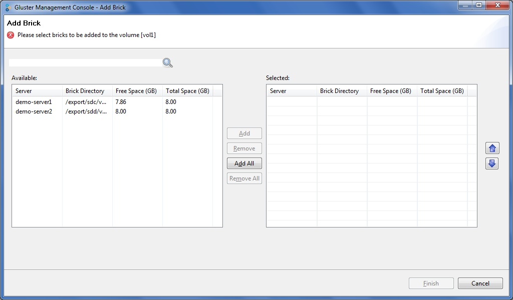
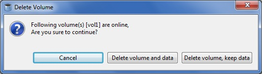

Adding Bricks
You can expand a volume, as required, by adding new bricks to an existing volume. To add a brick to an existing volume, perform the following steps.
Note: You need to add at least one brick to a distributed
volume, two (or multiples of two) bricks to replicated
volumes, and four (or multiples of four) bricks to striped
volumes when expanding your storage space.
To add a brick to an existing volume, perform the following
steps.
- Select the volume from the left pane, choose from the menu, toolbar, or right click and select Add Bricks.
The Add Brick window is displayed.

- Select the bricks that you want to add to the current volume.
Click Add to add a specific brick or Click Add All to add
all the available bricks.
- Click Finish. The Add Brick(s)to Volume window
appears indicating that the brick(s) is successfully added.

- Click OK.